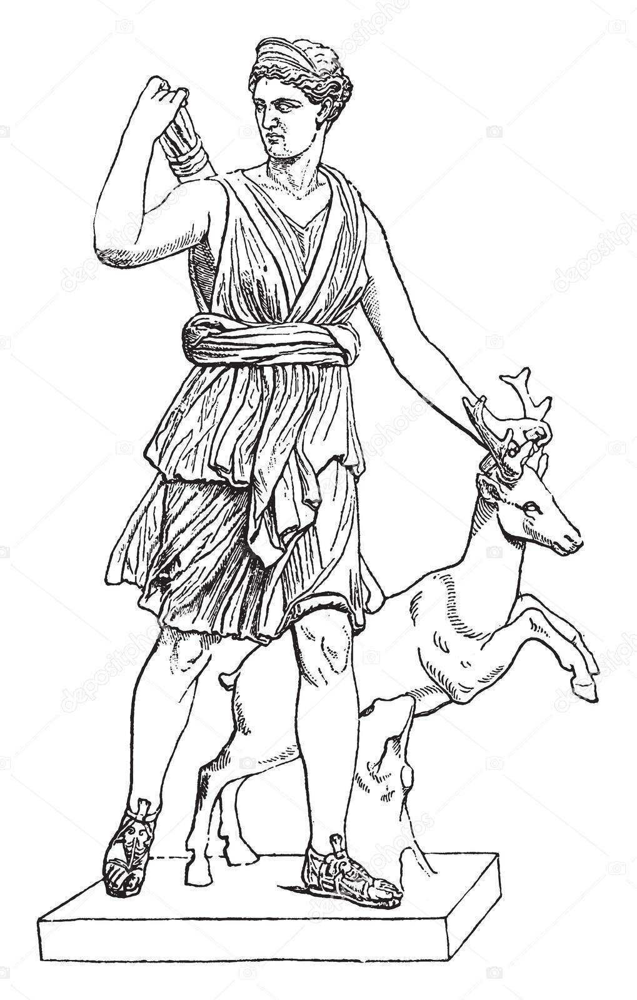

Deusa Ártemis
História de Ártemis
Artemis é uma deusa da mitologia grega, filha de Zeus e Leto e irmã gêmea de Apolo. Ela é conhecida como a deusa da caça, da vida selvagem, e da fertilidade. Artemis é frequentemente retratada como uma jovem virgem armada com um arco e flechas, e é a protetora das mulheres e das crianças. Ela é também associada à Lua e à natureza selvagem.
Artemis foi adorada principalmente em regiões rurais e em locais onde a natureza era reverenciada. Ela era uma figura importante para os caçadores e os pastores, que a invocavam para proteção e sucesso em suas atividades.
Cultos e Adoração
Artemis era adorada em vários santuários e templos ao redor da Grécia antiga. Um dos mais conhecidos era o Templo de Artemis em Éfeso, uma das Sete Maravilhas do Mundo Antigo. Os cultos a Artemis incluíam rituais de sacrifício e celebrações de festivais em sua honra, como o festival de Braurônia, onde meninas jovens participavam de cerimônias em homenagem à deusa.